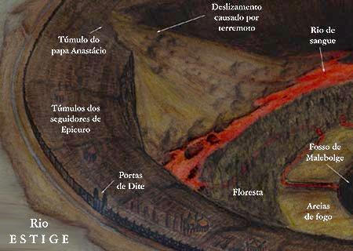

Canto XITúmulo do papa Anastácio
|
|  |
| Vista do sétimo círculo (fosso da cidade de Dite) com suas três subdivisões: rio Flegetonte (sangue fervente), floresta das Hárpias e deserto de brasas. Ilustração de Helder da Rocha. |
Nos dois últimos círculos estão os que praticaram a fraude. Eles premeditaram seus atos e têm plena consciência do mal que causaram. Um homem pode praticar dois tipos de fraude: contra pessoas que confiam nele ou contra estranhos que podem suspeitar dele. Este último tipo só destrói o vínculo do homem com a natureza e é punido no oitavo círculo onde encontraremos hipócritas, aduladores, ladrões, falsários, simoníacos, sedutores e trapaceiros. O primeiro tipo de fraude desfaz não só o vínculo do homem com a natureza, mas também aquele vínculo de confiança estabelecido com outros homens. É, portanto, no menor dos círculos, no nono e último, junto com Dite (Lúcifer), onde são punidos os que traíram aqueles que neles confiaram.
Quando o mestre concluiu seu discurso, perguntei-lhe:
- Por que alguns pecadores cumprem suas penas (mais leves) fora da cidade de Dite e outros cumprem penas mais pesadas dentro da cidade? Por que todos não estão aqui?
- Será que tu já esqueceste o que diz a tua Ética - respondeu -, quando ela explica em detalhes, as três coisas que ao céu mais desagradam: incontinência, malícia e bestialidade? A culpa por ter pecado por causa de incontinência ofende menos a Deus. Se você lembrar com cuidado essa doutrina, entenderá por que aqueles lá de cima foram separados destes maliciosos aqui em baixo.
A explicação foi bastante esclarecedora, mas uma dúvida ainda me atormentava. Eu não entendia como a usura podia ser um pecado de ofensa a Deus. Fiz, então, essa pergunta a Virgílio, que me respondeu:
- Mostra a filosofia, àquele que a compreende, como a Natureza se manifesta a partir do intelecto divino e da sua Arte. Se recorreres a tua Física, encontrarás, bem no início, como a vossa Arte também imita a Natureza. E, como o aprendiz que segue os ensinamentos do seu mestre, a Arte, sendo filha do homem, torna-se quase neta de Deus. Se lembras o que diz o Gênese, logo no início: convém ao homem tirar da Natureza e de sua Arte os meios para a sua sobrevivência. Mas o usurário, ao seguir outros caminhos, agride à Natureza e a Arte, que dela deriva, pois em outra coisa (o dinheiro) põe suas esperanças.
A aurora já se aproximava e o mestre me chamou para continuar a jornada, pois ainda faltava muito antes que chegássemos à descida para o rochedo.